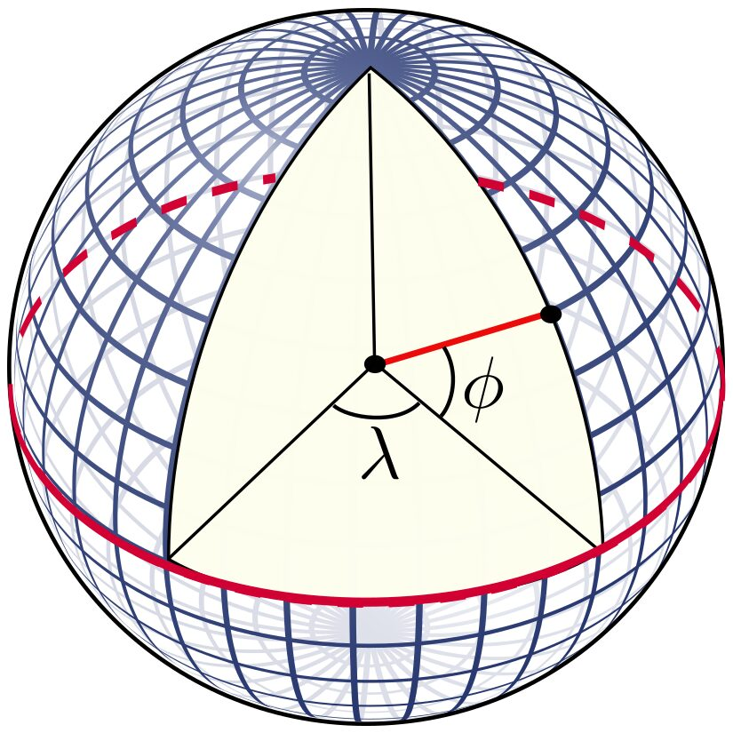
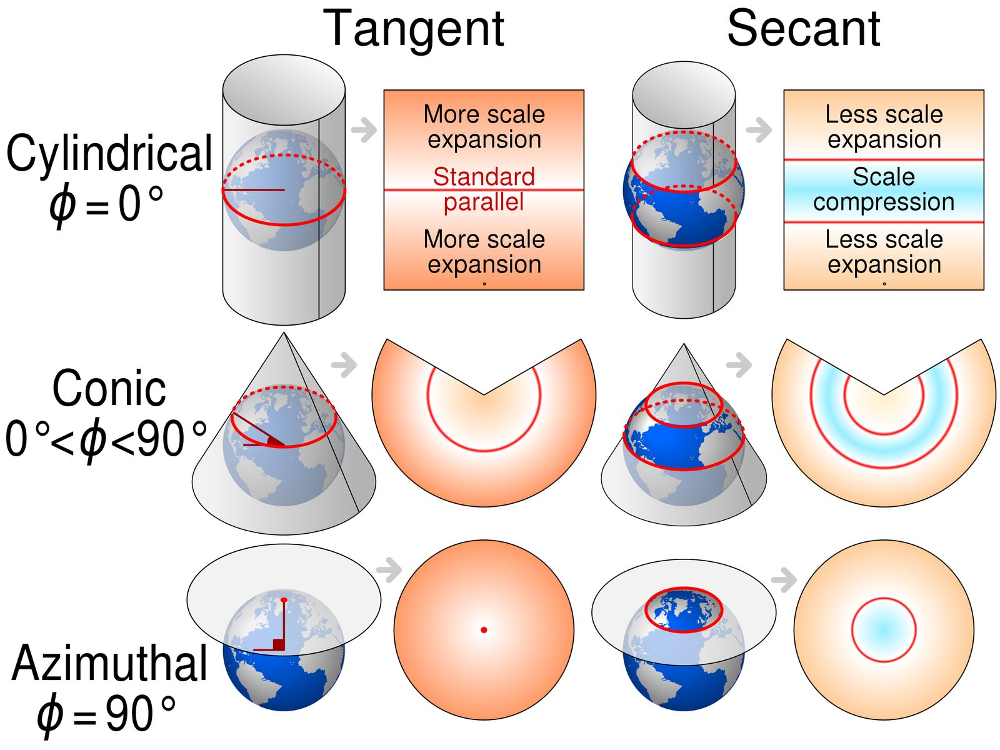

Simple feature collection with 2 features and 3 fields
Geometry type: POINT
Dimension: XY
Bounding box: xmin: 31.76 ymin: -24.54 xmax: 31.8 ymax: -24.5
Geodetic CRS: WGS 84
id lon lat geometry
1 a 31.76 -24.54 POINT (31.76 -24.54)
2 b 31.80 -24.50 POINT (31.8 -24.5)Spatial data in R
Class 2 · Theme 2 — Informatics tools for movement
Giuliano Colosimo
University of Rome Tor Vergata
2026-09-30
Today
- The two data models: vector and raster
- What a coordinate reference system is, and why every bug you will have this term is a CRS bug
- Geographic vs projected coordinates; UTM; EPSG codes
- The two packages:
sffor vector,terrafor raster - Turn the buffalo CSV into a real spatial object and measure something in metres
Last week’s trajectory plot was distorted because we treated degrees as if they were metres. Today we fix that properly.
1 · Two ways to represent the world
Vector and raster
Vector
Discrete objects with coordinates.
- Point — a fix, a nest, a trap
- Line — a trajectory, a river, a road
- Polygon — a home range, a park boundary, a lake
Each object carries an attribute table.
Exact geometry, arbitrary precision.
Raster
A regular grid of cells, each with a value.
- Elevation, NDVI, temperature, land cover
- Defined by origin, cell size, number of rows/cols, CRS
Continuous surfaces, fixed resolution.
Fast maths, no notion of individual objects.
Movement analysis is nearly always points (or steps) sampling rasters. That one sentence describes Classes 5, 7 and 8.
Choosing the model
| Question | Model |
|---|---|
| Where exactly was the animal at 08:00? | Vector (point) |
| What is the NDVI there? | Raster, sampled at that point |
| What is the park boundary? | Vector (polygon) |
| How far is the nearest river? | Raster (a distance surface) or vector + distance computation |
| How much forest within 500 m? | Raster, summarised in a buffer |
The same reality can be either. A river is a line if you care about its course, and a distance-to-river raster if you care about how far the animal is from it. Choose by the operation you need, not by what the thing “is”.
2 · Coordinate reference systems
The problem
The Earth is a lumpy ellipsoid. Maps and computer screens are flat. Getting from one to the other requires choices, and every choice distorts something.
A CRS answers three questions:
- What shape is the Earth? — the ellipsoid (e.g. WGS84, GRS80)
- How is that shape tied to the actual planet? — the datum
- How do we flatten it? — the projection (or none, if we keep angles)
Geographic coordinates

Longitude and latitude are angles, not distances
Latitude: angle north/south of the equator. Longitude: angle east/west of Greenwich. Units are degrees. This is what every GPS and every Movebank file gives you — usually WGS84, EPSG:4326.
Why you cannot do arithmetic with degrees
- One degree of latitude ≈ 111 km everywhere
- One degree of longitude ≈ 111 km × cos(latitude)
- at the equator: 111 km
- at 24° (Kruger): ~102 km
- at 46° (Switzerland): ~77 km
- at the pole: 0 km
Euclidean distance on longitude/latitude is meaningless. You either project to a metric CRS, or compute great-circle distances on the ellipsoid. sf does the second automatically for EPSG:4326 — which is safe, but slower, and does not fix your plots.
Projected coordinates

Every projection preserves some properties and destroys others
Conformal keeps angles/shape (Mercator, UTM). Equal-area keeps area (Albers, Mollweide). Equidistant keeps distances from a point. No projection keeps everything.
UTM: the practical default
- The world is cut into 60 zones, each 6° of longitude wide
- Each zone gets its own transverse Mercator projection, so distortion inside a zone is small (< 0.1%)
- Coordinates in metres: easting and northing
- Kruger is in zone 36S → EPSG:32736
- Switzerland is in zone 32N → EPSG:32632
UTM works beautifully inside one zone. Leo the vulture crosses many zones and 47° of latitude, so no single UTM zone fits him. For continental-scale tracks use an equal-area CRS suited to the region — or work in geographic coordinates with geodesic distances.
EPSG codes — the vocabulary you need
| EPSG | What | Units |
|---|---|---|
| 4326 | WGS84 geographic — GPS, Movebank | degrees |
| 3857 | Web Mercator — Google/OSM basemaps. Never for analysis | metres |
| 32736 | UTM zone 36S — Kruger | metres |
| 32632 | UTM zone 32N — Switzerland, Italy | metres |
| 3035 | ETRS89 / LAEA Europe — equal-area, continental | metres |
| 6933 | WGS84 / NSIDC EASE-Grid 2.0 Global — equal-area, global | metres |
3857 is a trap. It is conformal, wildly non-equal-area, and areas near the poles are inflated by orders of magnitude. Use it to display tiles, never to compute a home range.
Quiz
You have buffalo fixes in EPSG:4326 and you want the area of a 95% home range polygon, in km². What is the right sequence?
Project first, to a CRS whose units are metres and which is appropriate for the region — UTM 36S for Kruger. Then all the geometry operations are ordinary plane geometry and areas come out in m².
There is no fixed conversion from degrees² to km²: the factor depends on latitude. Web Mercator (3857) has units of metres but is not equal-area, so areas are systematically wrong. And while sf can compute geodesic lengths and areas on 4326, kernel-density home-range estimators need projected coordinates — they assume a plane.
3 · sf — vector data
The idea behind sf
A simple feature data frame is an ordinary data frame with one extra column, geometry, that holds the coordinates — and a CRS attached.
Everything else is dplyr
Because it is a data frame, all your usual verbs work, and the geometry comes along for the ride.
Simple feature collection with 1 feature and 2 fields
Geometry type: POINT
Dimension: XY
Bounding box: xmin: 31.8 ymin: -24.5 xmax: 31.8 ymax: -24.5
Geodetic CRS: WGS 84
id label geometry
1 b B POINT (31.8 -24.5)Note the geometry column survives select() without being named — it is “sticky”. Use st_drop_geometry() when you genuinely want a plain data frame.
The functions you will actually use
| Function | What it does |
|---|---|
st_as_sf() |
data frame → spatial |
st_crs() |
get/set the CRS. Setting ≠ transforming |
st_transform() |
reproject to another CRS |
st_coordinates() |
pull the coordinates back out as a matrix |
st_distance() |
distances between features |
st_buffer() |
a polygon at a fixed distance around features |
st_bbox() |
bounding box |
st_intersection(), st_union() |
overlay operations |
st_write() / st_read() |
GeoPackage, shapefile, GeoJSON… |
st_crs() vs st_transform() — the classic bug
st_crs(x) <- 32736
“These numbers were always UTM; I am just writing down the label.”
If the numbers are actually degrees, you have now lied to R. The points land near the origin off West Africa.
st_transform(x, 32736)
“These numbers are in the current CRS; compute the corresponding UTM coordinates.”
The numbers change. This is almost always what you want.
Assign a CRS only when the data arrived without one and you know what it should be. Otherwise, transform.
Quiz
Your colleague sends a CSV of coordinates like x = 375051, y = 7285726 and says “they’re from Kruger”. What are they, and what do you do?
Magnitudes give it away. Longitude and latitude are bounded by ±180 and ±90, so six- and seven-digit values cannot be degrees. Values of that size in metres with a large northing are classic UTM, and Kruger is zone 36S (EPSG:32736) — the 7,285,726 m northing is the southern-hemisphere false northing at ~24.5°S.
Because the numbers are already UTM, you declare the CRS when building the sf object (crs = 32736) rather than transforming. Transforming would treat metres as degrees.
Sanity check afterwards: st_transform(x, 4326) and confirm you land at roughly 31.8°E, 24.5°S.
4 · terra — raster data
A raster is a grid plus metadata
class : SpatRaster
size : 4, 6, 1 (nrow, ncol, nlyr)
resolution : 0.1, 0.1 (x, y)
extent : 31.5, 32.1, -24.8, -24.4 (xmin, xmax, ymin, ymax)
coord. ref. : lon/lat WGS 84 (EPSG:4326)
source(s) : memory
name : lyr.1
min value : 1
max value : 24What defines a raster
- Extent — xmin, xmax, ymin, ymax
- Resolution — cell size in CRS units.
res(r) - Dimensions — rows × columns × layers.
dim(r) - CRS — same concept as for vectors
- Values — one per cell per layer, possibly
NA
A multi-layer raster (SpatRaster with several layers) is how you store a time series: one NDVI layer per 16-day composite, stacked. That is exactly what we need in Class 5.
The terra functions you will use
| Function | What it does |
|---|---|
rast() |
create or read a raster |
crop() / mask() |
cut to an extent / to a polygon |
project() |
reproject (note: not st_transform) |
extract() |
sample raster values at points — the key operation |
aggregate() / resample() |
change resolution |
terrain() |
slope, aspect, from elevation |
distance() |
distance-to-feature surface |
global(), zonal() |
summaries |
writeRaster() |
save, usually GeoTIFF |
extract() is the bridge between the movement world and the environment world. Almost everything in Classes 5–8 passes through it.
Rasters and vectors must agree
Before extract(), three things must line up:
- Same CRS. If both objects carry a CRS,
terratransforms for you and warns. If either lacks one — a bare coordinate matrix — it assumes they match. - Overlapping extents. Non-overlap gives you a column of
NA, not an error. - Appropriate resolution. Extracting a 1 km NDVI cell for a fix with 10 m GPS error is fine. Extracting a 10 m Sentinel pixel for an Argos fix with 5 km error is self-deception.
Match the resolution of your environmental data to the error of your locations. A pixel finer than your positional error adds noise, not information.
Quiz
You run terra::extract(ndvi, cbind(buffalo$lon, buffalo$lat)) and every value comes back NA. The NDVI raster is in UTM 36S. What happened?
Modern terra is helpful when it can be: give it a SpatVector or an sf object that carries a CRS, and it transforms your points for you, printing a warning:
[extract] transforming vector data to the CRS of the rasterBut a plain two-column matrix has no CRS. terra can only assume the numbers are already in the raster’s coordinate system — so 31.8 and −24.5 are read as metres, land far outside the extent, and every lookup returns NA.
The same silent failure happens if the CRS of either object is missing (crs(r) <- ""). Lesson: keep your data in objects that carry their CRS, and never strip coordinates down to a bare matrix just to pass them along.
Today’s exercise
- Turn the buffalo CSV into an
sfobject - Reproject to UTM 36S and see the numbers change
- Measure the same distance three ways — and get three answers
- Build a raster, extract values at the fixes
- Make a map that is not distorted
Recap
- Vector = objects with coordinates; raster = a grid of values
- A CRS = ellipsoid + datum + projection. EPSG codes name them
- Degrees are angles: no Euclidean arithmetic, no KDE, no plotting with
asp = 1 st_crs()labels;st_transform()converts. Know which you needsffor vector,terrafor raster,extract()to join them
Before Class 3
- Read Geocomputation with R, ch. 2 and 7
- Make sure
library(move2),library(amt)andlibrary(mapview)all load